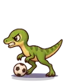
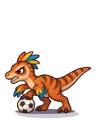
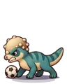
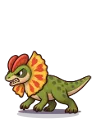
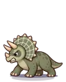
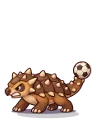
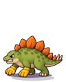
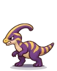
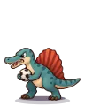

Wiki › Lugares › 🦖 Labirinto Jurássico
🦖 Labirinto Jurássico
🌀 Estádio do Multiverso Nível dos adversários: 566–684
Como chegar
🧭 Viagem: 🌀 No Rio de Janeiro, fale com o Guardião do Multiverso.
🧭 Caminho: de lá: 🌀 Estádio do Multiverso → 🦖 Vale Jurássico → 🦖 Labirinto Jurássico
Adversários aqui (10)
| Nome | Nível | XP | O que deixa cair | |
|---|---|---|---|---|
 | Compinho Ligeiro ×2 | 566 | 253.722 | |
 | Raptor Driblador ×3 | 578 | 264.594 | |
 | Paqui Cabeceador ×3 | 590 | 367.594 | |
 | Dilofo Cuspidor | 602 | 318.915 | |
| Ptera Ponta-Esquerda ×2 | 614 | 298.581 | ||
 | Trike Zagueirão | 628 | 416.469 | |
 | Anquilo Bate-Bola | 642 | 435.245 | |
 | Estego Goleiro ×2 | 656 | 454.435 | |
 | Parassauro Trombone | 670 | 395.032 | |
 | Espino do Lago ×2 | 684 | 494.056 |
Saídas para
Placas
🦖 LABIRINTO JURÁSSICO · 👑 PORTÃO DO REI REX · 🦖 SALA DAS SAMAMBAIAS · 🦖 CLAREIRA DOS RAPTORES · 🦖 ROCHEDO DOS PAQUIS · 🦖 PÂNTANO DOS DILOFOS · 🦖 PENHASCO DOS NINHOS · 🦖 CAMPO DAS FLORES · 🦖 CASCALHO DOS ANQUILOS · 🦖 CACHOEIRA DOS ESTEGOS · 🦖 BOSQUE DAS PALMEIRAS · 🦖 LAGO VULCÂNICO